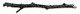

ACTE III SCÈNE 3
MINISTÈRE DE LA MAGIE,
DANS LE BUREAU DU DIRECTEUR DU DÉPARTEMENT DE LA JUSTICE MAGIQUE
DRAGO est impressionnant. Jamais encore nous ne l’avions vu ainsi. Une odeur de pouvoir se dégage de lui. Flottant des deux côtés de la pièce, des drapeaux de l’Augurey représentent l’oiseau dans un style fasciste.
DRAGO
Tu es en retard.
SCORPIUS
C’est ton bureau ?
DRAGO
Tu es en retard et tu ne me présentes aucune excuse. Peut-être as-tu l’intention d’aggraver le problème ?
SCORPIUS
Tu es directeur de la Justice magique ?
DRAGO
Comment oses-tu ? Comment oses-tu me mettre dans l’embarras, me laisser attendre et ne même pas t’excuser ?
SCORPIUS
Désolé.
DRAGO
Père.
SCORPIUS
Désolé, père.
DRAGO
Je ne t’ai pas élevé pour t’encourager à la désinvolture, Scorpius. Je ne t’ai pas élevé pour que tu m’infliges une humiliation à Poudlard.
SCORPIUS
Une humiliation, père ?
DRAGO
Harry Potter, poser des questions sur Harry Potter, quoi de plus embarrassant ? Comment oses-tu déshonorer le nom des Malefoy ?
SCORPIUS
Oh non ! C’est toi le responsable ? Non, non. Ce n’est pas possible.
DRAGO
Scorpius…
SCORPIUS
Dans La Gazette du sorcier d’aujourd’hui, un article raconte que trois sorciers ont fait sauter des ponts pour voir combien de Moldus ils pouvaient tuer d’un seul coup. C’est toi qui fais ça ?
DRAGO
Prends bien garde à ce que tu dis.
SCORPIUS
Les camps de la mort pour les Sang-de-Bourbe, la torture, les opposants brûlés vifs. Quelle est ta part de responsabilité là-dedans ? Maman m’a toujours dit que tu étais meilleur que je ne le voyais, mais en fait, ce que tu es vraiment, c’est ça ? Un assassin, un tortionnaire, un…
DRAGO se lève et tire brutalement SCORPIUS contre son bureau. Sa violence est surprenante, meurtrière.
DRAGO
N’invoque pas son nom en vain, Scorpius. N’essaie pas de marquer des points contre moi en te servant d’elle. Elle mérite mieux que cela.
SCORPIUS ne répond rien. Il est horrifié, terrifié. DRAGO le voit dans l’expression de son visage. Il lâche la tête de SCORPIUS. Visiblement, il n’aime pas faire de mal à son fils.
DRAGO
Non, ces imbéciles qui font sauter des Moldus, je n’en suis pas responsable, même si c’est à moi que l’Augurey demandera de calmer le Premier ministre moldu en lui versant de l’or… Ta mère t’a vraiment dit ça de moi ?
SCORPIUS
Elle m’a dit que grand-père ne l’aimait pas beaucoup, qu’il s’était opposé à cette union, qu’elle avait trop de sympathie pour les Moldus, qu’elle était trop faible – mais que tu avais bravé son opinion pour l’épouser quand même. Elle disait que c’était l’acte le plus courageux qu’elle ait jamais vu.
DRAGO
Avec ta mère, il était très facile d’être courageux.
SCORPIUS
Mais c’était… un autre toi.
Il regarde son père, qui fronce les sourcils en lui rendant son regard.
SCORPIUS
J’ai fait du mal, tu as fait pire. Que sommes-nous devenus, papa ?
DRAGO
Nous ne sommes rien devenus – nous sommes simplement ce que nous sommes.
SCORPIUS
Les Malefoy. La famille sur laquelle on peut toujours compter pour rendre le monde plus ténébreux.
Cette remarque fait mouche et DRAGO observe son fils avec intensité.
DRAGO
Cette affaire, à l’école – qu’est-ce qui l’a provoquée ?
SCORPIUS
Je ne veux pas être ce que je suis.
DRAGO
Et comment en es-tu venu à penser ça ?
SCORPIUS réfléchit désespérément pour trouver un moyen de raconter son histoire.
SCORPIUS
Je me suis vu moi-même d’une autre façon.
DRAGO
Tu sais ce que j’aimais le plus, chez ta mère ? C’est qu’elle m’aidait toujours à trouver une lumière dans l’obscurité. Elle faisait du monde – de mon monde en tout cas – quelque chose de moins… quel mot as-tu employé ? Moins « ténébreux ».
SCORPIUS
Vraiment ?
DRAGO dévisage son fils.
DRAGO
Elle est plus présente en toi que je ne le pensais.
Un temps. Il examine soigneusement SCORPIUS.
DRAGO
Quoi que tu fasses, ne mets pas ta vie en danger. Je ne veux pas te perdre, toi aussi.
SCORPIUS
Oui, père.
DRAGO observe son fils une dernière fois – essayant de comprendre ce qu’il se passe dans sa tête.
DRAGO
Pour Voldemort Brave et Fort.
SCORPIUS lui lance un regard, puis sort de la pièce.
SCORPIUS
Pour Voldemort Brave et Fort.
